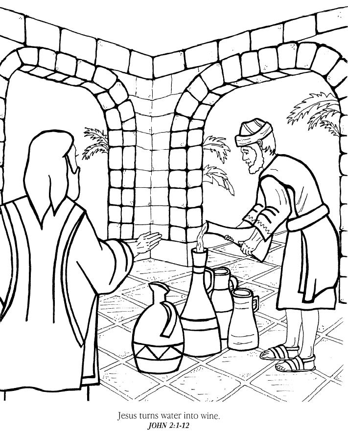

Read the lessons at the Vanderbilt Library website: http://divinity.lib.vanderbilt.edu/lectionary/cEpiphany/cEpiphany2.htm
1. Who were at the wedding feast?______________________________________________
2. What did they run out of at the feast?_________________________________________
3. Who did Mary ask to take care of the problem?_________________________________
4. What did Jesus say to Mary?________________________________________________
__________________________________________________________________________
What did Jesus tell the servant to do?_________________________________________
__________________________________________________________________________
T I Y C Z R Y J P T H E M T T Y J
|
PURIFICATION BRIDEGROOM STANDING SERVANTS INFERIOR EVERYONE STEWARD HOLDING GALLONS TWENTY THOUGH THIRTY TASTED SERVES JEWISH GUESTS FILLED CALLED BECOME WHERE WATER UNTIL THERE STONE RITES JESUS FIRST DRUNK DRAWN CHIEF AFTER WITH WINE WHEN WERE TOOK THEY THEN THEM THAT TAKE SOME SAID NRSV KNOW KNEW KEPT JOHN JARS HAVE GOOD FROM EACH CAME BRIM YOU WHO SIX OUT NOT HIM HAD FOR DID BUT UP OF |
from www.geocities.com/lectionarypuzzles/ free to distribute for free with this notice. Words are in a straight line left to right or top to bottom |
|
